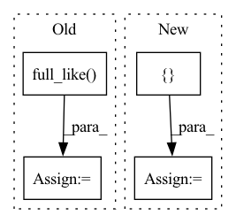

Pattern ID :29581
Before Change
swap_idx = self.uid2swap_idx[uid_list]
rev_swap_idx = self.uid2rev_swap_idx[uid_list]
swap_row = torch.cat([torch.full_like( swap, i) for i, swap in enumerate(swap_idx)])
swap_col_after = torch.cat(list(swap_idx))
swap_col_before = torch.cat(list(rev_swap_idx))
After Change
history_col = torch.cat(list(history_item))
positive_u = []
positive_i = []
for idx, uid in enumerate(uid_list):
uid = uid.item()
positive_u += [idx for i in range(self.uid2items_num[uid])]
positive_i += list(self.uid2positive_item[uid])
positive_u = torch.from_numpy(np.array(positive_u))
positive_i = torch.from_numpy(np.array(positive_i))In pattern: SUPERPATTERN
Frequency: 3
Non-data size: 4
Instances Fragment ID: 87717256
Project Name: rucaibox/recbole
Commit Name: a3596a230c1b34f77b50d21460d63996206cd55a
Time: 2021-07-15
Author: 2017202006@ruc.edu.cn
File Name: recbole/data/dataloader/general_dataloader.py
M Class Name: FullSortEvalDataLoader
N Class Name: FullSortEvalDataLoader
M Method Name: _next_batch_data(1)
N Method Name: _next_batch_data(1)
M Parent Class: AbstractDataLoader
N Parent Class: AbstractDataLoader
M File Name: recbole/data/dataloader/general_dataloader.py
N File Name: recbole/data/dataloader/general_dataloader.py
M Start Line: 225
M End Line: 256
N Start Line: 232
N End Line: 256
Before Change
deriv0 = (next_ys[0] - ys[0]) / (next_ts[0] - ts[0])
// t0 is of shape ("channels",), despite being timelike.
t0 = jnp.full_like( ys[0], fill_value=jnp.nan)
if replace_nans_at_start is None:
y0 = ys[0]
else:
y0 = jnp.broadcast_to(replace_nans_at_start, ys[0].shape)After Change
_hermite_forward, (t0, y0, deriv0), (ts[1:], ys[1:], next_ts[1:], next_ys[1:])
)
prev_ts = jnp.concatenate([t0[None], prev_ts])
prev_ys = jnp.concatenate([ y0[None], prev_ys Fragment ID: 87717244
Project Name: patrick-kidger/diffrax
Commit Name: 520f8a03fabece54c8b620b58f8226ee9af45088
Time: 2021-10-29
Author: 33688385+patrick-kidger@users.noreply.github.com
File Name: diffrax/global_interpolation.py
M Class Name: AnonimousClass
N Class Name: AnonimousClass
M Method Name: _backward_hermite_coefficients(5)
N Method Name: _backward_hermite_coefficients(5)
M Parent Class:
N Parent Class:
M File Name: diffrax/global_interpolation.py
N File Name: diffrax/global_interpolation.py
M Start Line: 373
M End Line: 394
N Start Line: 355
N End Line: 378
Before Change
if start_times is not None:
if isinstance(times, (np.datetime64, datetime.datetime)):
times = np.full_like( start_times, fill_value=times)
assert dt_unit is not None
if isinstance(dt_unit, str):
dt_unit = np.datetime64(1, dt_unit)
times = (times - start_times) / dt_unit // todo: validate int?After Change
Return a `Predictions` object with a single timepoint for each group.
if not isinstance(times, (list, tuple, np.ndarray)):
times = np.asanyarray([ times Fragment ID: 87717250
Project Name: strongio/torchcast
Commit Name: 8cb6b7920cb7ff02cb44a7bab8ab482bb633be0c
Time: 2021-07-06
Author: jacob.dink@strong.io
File Name: torchcast/state_space/predictions.py
M Class Name: Predictions
N Class Name: Predictions
M Method Name: _subset_to_times(4)
N Method Name: _subset_to_times(4)
M Parent Class: nn.Module
N Parent Class: nn.Module
M File Name: torchcast/state_space/predictions.py
N File Name: torchcast/state_space/predictions.py
M Start Line: 388
M End Line: 393
N Start Line: 387
N End Line: 397